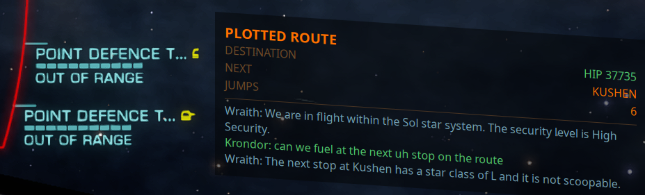
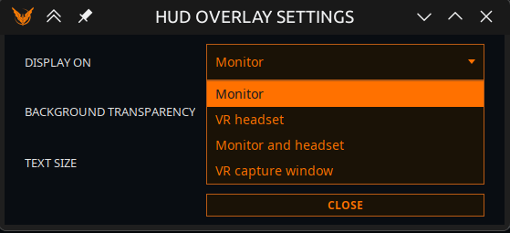

Overlay HUD
Nouveau en V1.1. Un overlay toujours au premier plan qui affiche vos objectifs du moment à l'écran — dans la fenêtre du jeu, ou dans un casque VR.

Il remplace l'ancienne fenêtre d'overlay pour OBS. L'overlay tourne hors processus : il n'entre donc en concurrence ni avec le jeu ni avec l'application pour le fil d'interface.
La carte est dessinée selon la géométrie du cockpit et non d'équerre avec votre moniteur : elle penche donc comme penchent les panneaux du vaisseau à cet endroit de l'écran — déplacez-la et l'inclinaison s'ajuste. Ses lignes sont des droites inclinées, et c'est pourquoi une valeur peut se trouver nettement plus bas que l'étiquette à laquelle elle appartient : lisez chaque ligne le long de la pente, comme vous lisez les affichages du jeu juste à côté. L'ampleur apparente de cette chute dépend de la TAILLE DU TEXTE autant que de l'emplacement — l'inclinaison est imposée par le cockpit, donc un texte plus petit signifie des lignes plus courtes et la même chute en traverse davantage.
Activez-le avec AFFICHER OVERLAY dans l'onglet Vega, et configurez-le avec RÉGLAGES DE L'OVERLAY à côté.
Si le binaire de l'overlay est absent de la distribution, l'interrupteur reste éteint et le signale dans le journal de diagnostic. Il ne prétendra pas à un overlay inexistant.
Ce qu'il affiche
L'overlay dessine des cartes — une par objectif en cours, déduite de ce que vous faites réellement. Les cartes apparaissent et disparaissent d'elles-mêmes ; il n'y a rien à configurer.
| Carte | Apparaît quand |
|---|---|
| EXOBIOLOGIE | Vous échantillonnez des organismes — genre, et ce qu'il reste à trouver |
| CONTRAT EXTERMINATION | Vous enchaînez des missions d'extermination — éliminations requises, pile, récompense |
| EXTRACTION | Vous minez — soute, limpets, marchandise visée |
| ROUTE COMMERCIALE | Une route commerciale est tracée — marchandise, achat, vente, marge, étape n sur m |
| OPPORTUNITÉ FRET | Un fret rentable a été repéré pour ce que vous transportez |
| MISSION | Une mission mise en avant — cible, fret ou passagers, expiration, récompense |
| ITINÉRAIRE TRACÉ | Un itinéraire est défini — destination, système suivant, sauts restants |
| MARCHAND DE MATÉRIAUX · COURTIER EN TECHNOLOGIE · AGENTS INTERSTELLAIRES · VISTA GENOMICS | Vous avez posé un rappel de destination pour aller en voir un |
La carte de mission mise en avant choisit sa mission comme vous le feriez : d'abord celle qui se trouve à la destination de votre itinéraire, puis une de votre système actuel, puis la plus récemment acceptée.
Réglages de l'overlay

TRANSPARENCE DU FOND (0–100 %) et TAILLE DU TEXTE (75–200 %) sont deux réglages distincts, et c'est délibéré. Un unique curseur d'« opacité » atténuerait le texte en même temps que le fond, ce qui est précisément ce qui rend illisible un overlay assombri au-dessus d'une surface planétaire lumineuse. Atténuez le fond ; laissez le texte tranquille.
AFFICHER SUR
| Mode | Ce qu'il fait |
|---|---|
| Ecran | Une fenêtre de bureau. Le réglage par défaut, et ce que faisait toute version antérieure à la V1.1. La carte penche pour s'accorder au cockpit, et l'inclinaison change selon l'emplacement — voir plus haut |
| Casque VR | Un overlay SteamVR. Nécessite SteamVR en marche. Si la VR est indisponible, il retombe sur une fenêtre de bureau : vous n'êtes jamais laissé sans rien |
| Ecran et casque | Les deux à la fois, alimentés par des données identiques. Utile si vous volez en VR mais diffusez ou enregistrez depuis le moniteur |
| Fenêtre de capture VR | Une fenêtre simple, plate et opaque, qu'un outil de capture peut épingler |
À propos de la fenêtre de capture VR
Ce mode ne parle pas à SteamVR. Lancez votre outil de capture — Desktop+, OVR Toolkit ou Virtual Desktop — et choisissez la fenêtre nommée « EliteIntel HUD (VR capture) ».
Pourquoi elle existe : le mode SteamVR remet au compositeur une texture complète par caractère saisi, et sur un casque en streaming cela a été signalé comme un coût réel en images par seconde. Un outil de capture prend la fenêtre sur le GPU à son propre rythme, et vous offre des réglages de placement et de courbure que cette application n'a pas.
C'est un mode distinct plutôt que « pointez votre outil de capture sur la fenêtre Ecran », parce que cette fenêtre est inclinée, translucide et considérée comme une fenêtre d'outil — et les sélecteurs de capture les filtrent entièrement.
POSITION DANS LE CASQUE
Huit emplacements : En haut, En haut à droite, À droite, En bas à droite, En bas, En bas à gauche, À gauche, En haut à gauche.
Le HUD est fixé devant votre siège et ne suit pas votre tête. La direction choisie est mesurée depuis l'endroit où vous regardez après la Réinitialisation de la position assise de SteamVR — recentrer votre vue déplace donc le HUD avec le cockpit, ce qui est le comportement voulu. Si vous regardez ailleurs, le HUD reste où vous l'avez laissé, exactement comme un panneau physique.
Le lire dans une autre langue
Les étiquettes des cartes suivent la langue de l'application, et les nombres sont groupés comme cette langue les groupe. Les noms fournis par le jeu — systèmes, stations, marchandises — passent sans modification.
Community 👉Matrix👈